Parceiras Sem Fins Lucrativos
Promovemos e apoiamos organizações sem fins lucrativos que beneficiam as mulheres da First Coast.
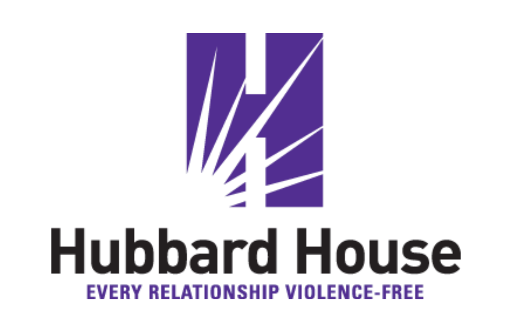
Hubbard House
Segurança, empoderamento e apoio para sobreviventes de violência doméstica nos condados de Duval e Baker.
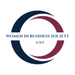
Women in Business Society – UNF
Organização estudantil da University of North Florida que conecta e desenvolve futuras mulheres de negócios.
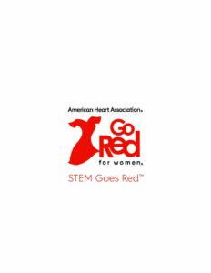
STEM Goes Red – American Heart Association
Aproxima meninas das carreiras STEM enquanto promove a saúde cardíaca das mulheres.
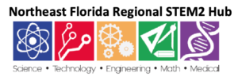
Northeast Florida Regional STEM2 Hub
Acelera oportunidades de aprendizagem STEM para estudantes do nordeste da Flórida.
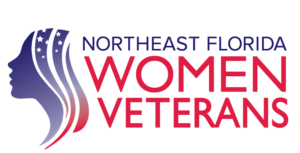
Women Veterans Resource Center
Recursos e apoio para mulheres veteranas.
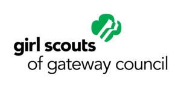
Girl Scouts of Gateway Council
Forma meninas com coragem, confiança e caráter no norte da Flórida.
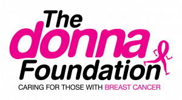
The DONNA Foundation
Assistência financeira e apoio para famílias que vivem com câncer de mama.
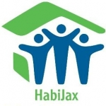
HabiJax – Habitat for Humanity of Jacksonville
Oportunidades de moradia acessível para famílias de Jacksonville.
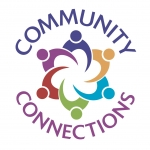
Community Connections
Moradia e serviços de apoio para mulheres e crianças em Jacksonville.
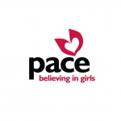
PACE Center for Girls
Educação, aconselhamento e defesa de direitos para meninas e mulheres jovens.
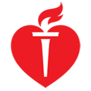
American Heart Association
Combate às doenças cardíacas e ao AVC, as principais ameaças à saúde das mulheres.
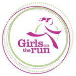
Girls on the Run
Inspira meninas a serem alegres, saudáveis e confiantes por meio de programas baseados em corrida.
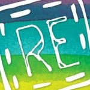
Rethreaded
Renova a esperança e as carreiras de sobreviventes do tráfico de pessoas.
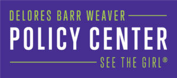
Delores Barr Weaver Policy Center
Pesquisa, advocacy e ação em favor das meninas.